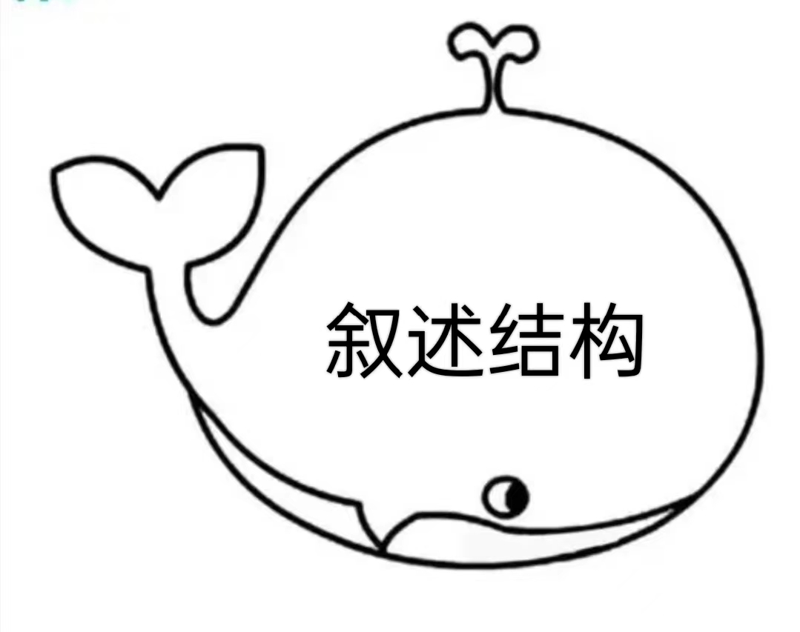
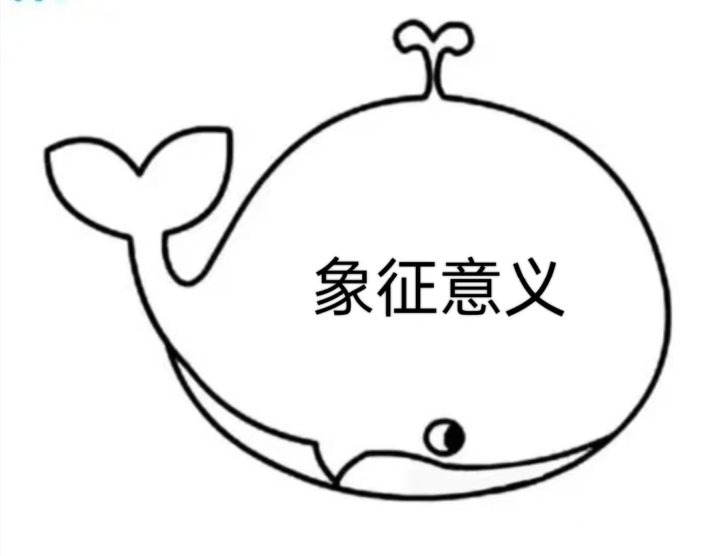
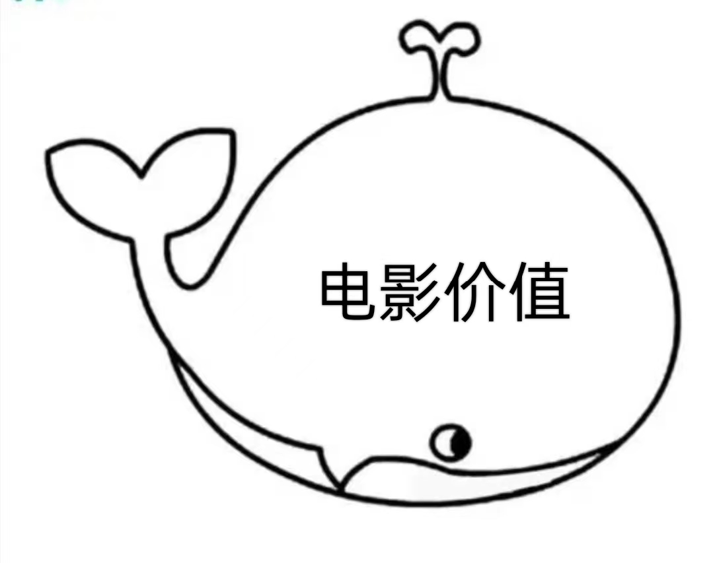
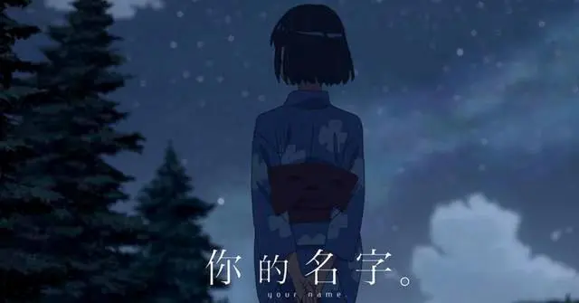
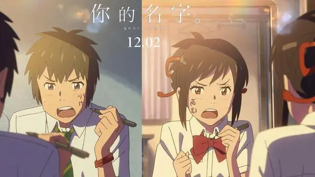
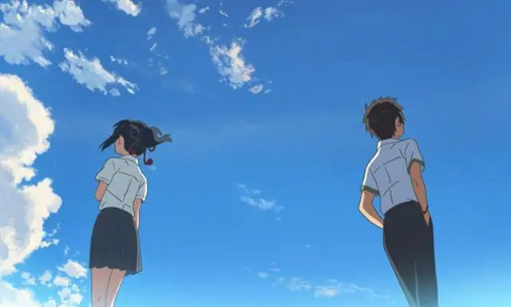
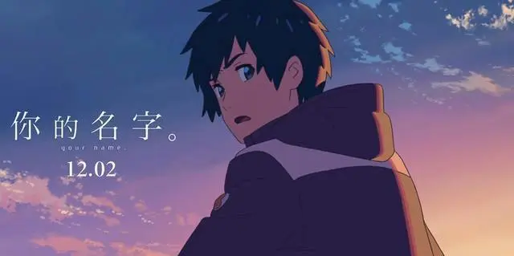
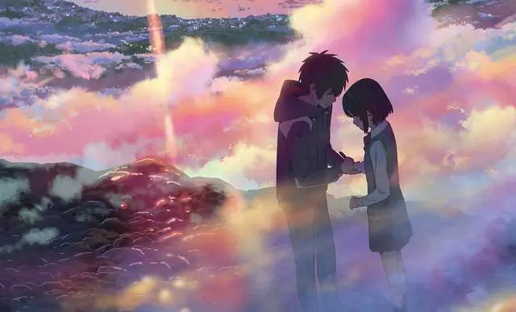

你的名字
.



.
"
《你的名字》是新海诚导演于2016年导演的影片。该片自上映以来，就取得了不俗的成绩。在日本，这是第一部宫崎骏作品以外票房突破100亿日元的动画电影。而在全球票房中，《你的名字》超过了《千与千寻》的成绩，成为日本电影史上票房收益最高的电影。
影片基于新海诚的原创剧本，讲述了女主三叶和男主泷在梦中相遇，却意外地互换了身体，由此而产生羁绊，寻找彼此的故事。他们隔着时间与空间，不断相遇又错过，最终因为思念和执念，在茫茫人海中，再次重逢。故事细腻唯美，令人动容。
整部影片传递的，仍然是距离和思念的主题。但与新海诚以往作品稍有不同，在《你的名字》中，导演在影片中非常克制悲伤情绪的使用，取而代之的是活泼、轻松、生活化的情感基调。影片中，有点粗心但成长的男主，有点胆小但善良的女主都让人印象深刻。
抛开电影内容的完整丰富，导演呈现的高超技巧同样是这部电影的魅力所在。所以今天，我将从“叙述结构、象征意义、电影价值”三个角度入手，多维度分析这部动画影片。而在本文第三部分，我将结合电影情节以及自己的观影感受，谈一谈新海诚动画的独特魅力。 ➢叙事结构
➢叙事结构
双线叙述贯穿全片，辅以蒙太奇表现手法，调动观众情绪，把控故事节奏
就影片的叙事结构来说，导演为女主三叶和男主泷各自安排了一条支线，两条支线平行推进，营造了两个不同的时空。随后，导演以男女主身体交换作为两条平行线的交汇点，并辅以蒙太奇的剪辑手法，通过一波三折的情节，推动剧情的发展，达到情感的高潮。
该片虽然结构复杂，但经过导演精巧的叙事安排，脉络流畅自然。接下来，我将细细解读本片的叙事结构。
① 男女主两条支线并行展开，结合时空穿越的情节，产生了情感的羁绊
女主三叶，居住在偏远的系守村。作为宫水家族的传承者，肩负着守卫神社的重任，却也对都市生活心向往之。男主泷，位于千里之外的东京，性格大条，为人真诚。原本毫无交集的两人 ，却因为在梦中相遇，互换身体，而产生了交集。
穿越进入三叶身体的泷，使三叶在他人眼中女子力爆棚，滑稽可爱，英气逼人。而进入泷身体的三叶，使泷变得细腻可爱，成为了众人眼中的暖男。此时男女主人公双线并行，行为举止两相对比，妙趣横生。随着两人频繁地穿越，男女主逐渐互生情愫，产生了情感上的羁绊。
紧接着，在三叶的时空中，彗星碎片的坠落使系守村毁于一旦，三叶也因此丧生。泷不再穿越，但为了寻找记忆中的三叶，来到了系守村，喝下口嚼酒，目睹了三叶的一生，也了解了一切的真相。这时，奇迹发生了，泷再次进入三叶的身体，并誓死要让小镇幸免于难。
纵观整部影片，男女主人公的两条线看似平等同时进行，但是无论是视点的分配，还是画面所占比重，都各有侧重。在彗星到来之前，影片着重于三叶的日常和校园生活，以突出她对东京都市生活的憧憬。而在彗星到来之后，泷再次穿越时空寻找三叶成了影片的重头戏，以突出他对三叶的思念之情。
在我看来，影片中的双线叙述与时空穿越的情节相得益彰，扩充了影片的信息量。可以说，两条叙事线中，三叶的视角主导着本片的前半部分的节奏。而更为重要的后半部分，则以泷的主视角的反转做对比。与此同时，空间的互换与时间维度的导入，无一不体现新海诚超强的掌控能力。

② 蒙太奇手法的巧妙安排，推动剧情高潮，满足观众期待
除了上文提及的双线叙事外，精湛的蒙太奇表现方式，顺序、倒叙、插叙的综合应用，也是影片的一大特色。
影片的开场有一段交叉剪辑，是成年的泷和三叶生活在东京，各自早上上班的场景。但两人心中隐隐有个声音在对自己说，自己好像忘记了什么。紧接着，影片开始使用倒叙蒙太奇，将故事缓缓，影片由此拉开序幕。我们看到了睡梦中的三叶，耳边回想着一个女生再叫泷的名字。随着三叶的醒来，我们得知泷穿越进入了三叶的身体，由此开始了影片的正题。
而随着剧情的展开，泷和三叶开始不断地穿越进入彼此的身体，平行蒙太奇的运用，将前半部分的喜剧性和荒诞感铺陈得恰到好处。突然增加男子力的三叶，英姿飒爽，无论是霸气掀桌还是跳跃扣篮，皆引得众人注目。而增加女子力的泷，则一改往日的吊儿郎当，变得腼腆羞涩，获得了暗恋女生的好感。
当然，这一切都是在男女主互相助攻的前提下实现的。互换后回归正常的两人，借助手机留言了解到对方用自己身体做过得种种荒唐之事，羞愧的表情让人觉得滑稽可爱。
在影片的最后，交替蒙太奇的使用，推动了剧情，使影片达到了情感的高潮。泷和三叶在方向相反的两辆地铁上匆匆一瞥，认出了彼此。此时，镜头随着他们奔出地铁站，穿过街道，越过人海寻找彼此而不断切换。快速的节奏调动了观众的情绪，担心他们就这样再次错过。
最后，无数次的擦肩而过以后，他们终于相遇在楼梯的两端。一句“你叫什么名字”链接了影片的开头，让人感慨万千，原来所有的相遇，都是久别重逢。
借用蒙太奇的表现方式，使整部影片的情节环环相扣，引人入胜。倒叙补叙插叙混合使用，将故事拆分成了一个个互相补充说明的碎片，最后因男女主的重逢形成了完美动人的图画。而影片前后的互相照应，完美地诠释了“分别”与“重逢”的剧情发展，感动观众的同时，也达到观众所需要的心理满足感。
 ➢象征意义
“结绳”的出现契合主题，具有深刻的象征意义，引起观众的深度思考
在新海诚的动画中，几乎都有几样物品，作为暗线，支撑着剧情的发展。例如《秒速五厘米》中的樱花花瓣，《言叶之庭》中的雨、日式庭院和鞋子等。这些物品在有力地推动情节发展的同时，作为意象，包含着创作者的思想情感，升华影片主题。
而在《你的名字》中，“结绳”作为全片的暗线，贯穿影片的细节，值得人们细细品味。这绝非导演的随意堆砌，而是巧妙地刻意为之，接下去我就为大家一一分析：
① 导演以“结绳”为线索，推动人物情感的层层递进
首先，在影片中，三叶绑头发的结绳，是剧情发展的推动力，也是男女主生命轨迹产生交集的联系；
如果观众稍加留意，就会发现不同情境下，男女主的相遇都离不开结绳这一关键物品。体现在影片中，有以下几个场景令人印象深刻：
三叶历经艰辛，来到了泷的时空与他见面。然而三年前的泷并不认识三叶，三叶失落不已。在下车时，泷脱口而出问三叶名字，三叶逆着人流，将自己的发绳解下，穿越人群，交到泷的手中。
泷和三叶在黄昏时刻，前沿着诹访湖的圆环平面，终于突破时空的壁垒见到了对方。泷将三年来一直绑在手腕上的结绳结下，交给三叶。三叶将结绳绑在头上，两人相视而笑。
泷和三叶逐渐步入社会，但他们不记得对方的名字，却成了彼此心底最深的执念。在街上的擦肩而过，三叶头上绑的结绳，再次触动了泷的心弦，也暗示着两人之后的久别重逢。
可以说，结绳不是一件简单的物品，它被导演赋予了特殊的使命。其创造了他们的首次相遇，又在冥冥之中参与了他们后续的会面，最后安排了他们的久别重逢。是整个故事有始有终，引人入胜。
其次，结绳也是主人公情感变化的重要载体，体现了人物情感的层层递进。
在首次会面中，因为泷在他此刻的时间线上并不认识三叶，虽然接受了三叶的绳结，但泷却不明所以，只觉得三叶这个女生有些奇怪。
而随着剧情的发展，泷在不断穿越过程中，明白了一切，也对三叶暗生情愫。当他与三叶彼此呼喊名字，在黄昏这个时空交界的时刻终于见到了对方，泷向三叶交还结绳。两人虽然没有说破，但已心照不宣，暧昧的情愫在空气中回荡。
影片的最后，当时隔多年，两人在街边的擦肩而过，泷瞥到了三叶头上的结绳，心里的某个角落再次被触动。当两人最终因为执念，穿越人海，终于在街角一隅的楼梯处相遇时，泷犹豫过后转身的一句“我是否在哪里见过你”，两人抑制不住泪流满面，彰显着两人对彼此深深的思念。
在我看来，绳结的出现，在无形中一步步引领着泷和三叶，穿越时空，阻断隔阂，彼此相遇。它作为主人公爱情的载体，是折射不同情境下人物内心情感的最佳方式。不需要过多的语言和行为，也不需要高潮的情节和快速的节奏，就让观众体会到了泷和三叶美好真挚的爱情，撩拨着人们的心弦。

② “结绳”的背后蕴含着人与人之间的思念与羁绊，凸显故事主题
影片中，三叶的祖母曾道出结绳的含义，她说：
“人与人之间的联系可以叫做产灵，时间的流动也可以叫做产灵，全部都是神的作品，我们编制的结绳也是神的作品，体现了时间的流动，将丝线汇聚在一起编织成型，扭曲，缠绕，有时还原，断裂，再次连接，那就是产灵，那就是时间。”
由此可以看出，丝线互相连接，是结。时间是线，相互交织是结。人与人之间思念是绳，羁绊和相聚，亦是结。
细细想来，影片男女主各自的平行时空是线，彗星的轨迹是线。而当两人互相穿越时空，身份互换，两个时空的时间线互相交织是结。两人在黄昏那刻诹访湖的圆环平面上，两人突破时空的隔阂见到彼此，是结。原本平行的时空线，交织在一起，变成了结，将泷和三叶的命运紧密联系在了一起，亦增加了互相的羁绊。
与此同时，对于三叶来说，解下绑在头发上结绳，将其以递给泷，是表达了对泷的思念。而当泷将绳子绑在手腕上，首尾相连，又再次变成了绳结。绳子形状的改变，意味着两人的情感联系在一起，互相羁绊。而绳结在此，预示着两人终将相聚。
在我看来，新海诚赋予结绳多种意象，最终想要表达的，还是距离和思念的故事主题。在新海诚精巧细腻，而且比原来更加俏皮自如的影像世界里，更多的人爱上了这个细致的思念、距离与相遇的故事，为了泷与三叶的错过与相遇感慨万分，并深深动容。
 ➢电影价值
基于故事情节，并结合自身的观影感受，谈谈新海诚动画的独特魅力与现实意义
《你的名字》继承了新海诚一贯的动画风格，唯美的画面，动人的旋律，细腻的旁白，伴随着现代社会的网络以及科技，讲一个分离和思念的故事娓娓道来。
所以为了让大家更深层次地了解新海诚动画的特点，我将结合自己的观影感受，谈谈其动画的独特魅力。
① 画面细腻，音乐婉转，带来视听盛宴
与宫崎骏动画电影中多为虚构的场景不同，新海诚动画电影里充斥着大量的真实场景。比如影片中三叶居住的系守村，取景于日本长野县的诹访市。镜头画面切换到泷居住的东京时，背景画面中还出现了新宿警察局。这些一幕幕的画面的精准还原，简直可以和高清摄像所媲美。此外，无论是画面光线的明暗对比，还是绚丽的色彩，每一帧画面都是如此细腻，带来极致的观赏体验。 除了画面之外，新海诚动画中的音乐缓慢纯净，也让人过耳不忘。令人印象深刻的是，电影最后，泷和三叶兜兜转转，终于重逢。两人异口同声的一句“你的名字是”，伴随着响起的悠扬的音乐，配合着男女主无法抑制的思念，每一个音符都直击观众的泪腺，回荡在人们的心里久久不能平息。
在我看来，在唯美画面以及纯净音乐的巧妙结合下，每一帧画面每一段旋律都与电影思念的主题相契合。让人在观影后，一边体会着恋爱时青涩的悸动，一边又品味着爱情思念背后的玻璃渣。
②结合“原风景”概念，回归日本传统文化
“原风景”的概念兴盛于1970年代的日本，以奥野健男的著作《文学中的原风景》为起始，涵盖人文、地里、文学等多个领域，反应了日本的传统文化以及风土人情。
体现在影片中所展现的祭祀仪式，诹访湖的风景，宫水神社的编织工艺等，无不体现了日本“原风景”的概念。这些场景唤起了人们对与日本传统文化以及风貌的关注，达到了传承文化的作用。
在我看来，新海诚在影片中融入了原风景的概念，是在向日本的传统文化致敬。一个国家深厚的底蕴往往体现在它的传统文化中，承载着一国人民对自身根源的探寻，对自身历史的深深凝望。这种对传统的回归使作品有了真正的底蕴和原色。

③聚焦现代社会，凸出人心的隔阂，引起人们的反思
与宫崎骏动画中表达人和自然和谐相处的主题不同，新海诚的动画所讨论的却是人心之间的隔阂与思念。在这个信息发达的时代，新海诚希望人们在欣慰着技术便利的同时，也能缩短心灵的距离。
在影片中，主人公起初在交换身体时，是手机成为了两人通信的媒介。但信息网络并没有阻隔两人心中的距离，他们对于彼此的思念和羁绊，让他们穿越时空，兜兜转转，最终重逢。物理的距离并不可怕，若两颗心真诚相待，以思念相连，人海之中，我们终会相遇。
在我看来，新海诚是伴随网络时代而崛起的导演，所以他更关注屏幕背后人们的生活状态。网络能够最方便快速地帮助人们解决难题，却唯独不能带来情感的慰藉。新海诚用这样的故事去温暖城市中每一个愿意爱的人，时间和空间并不是束缚，唯有隔阂的心灵距离，才会阻隔爱。
总结一下
《你的名字》作为一部科幻爱情的动画片，向我们描绘了这个时代年轻人内心特有的细腻、距离、隔阂还有爱情。没有高潮迭起，也没有恢宏的叙事，却有着很强的渗透力，牢牢抓住这个时代的情绪，直击人心。
"